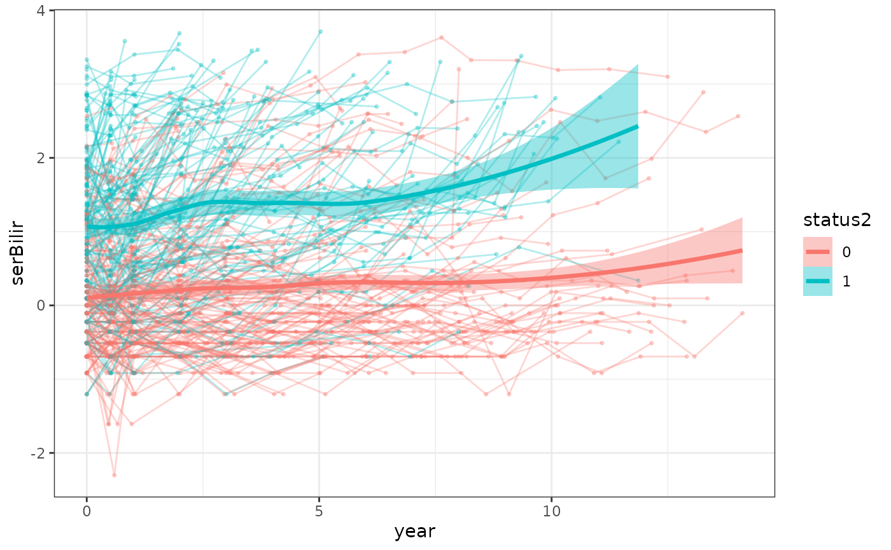
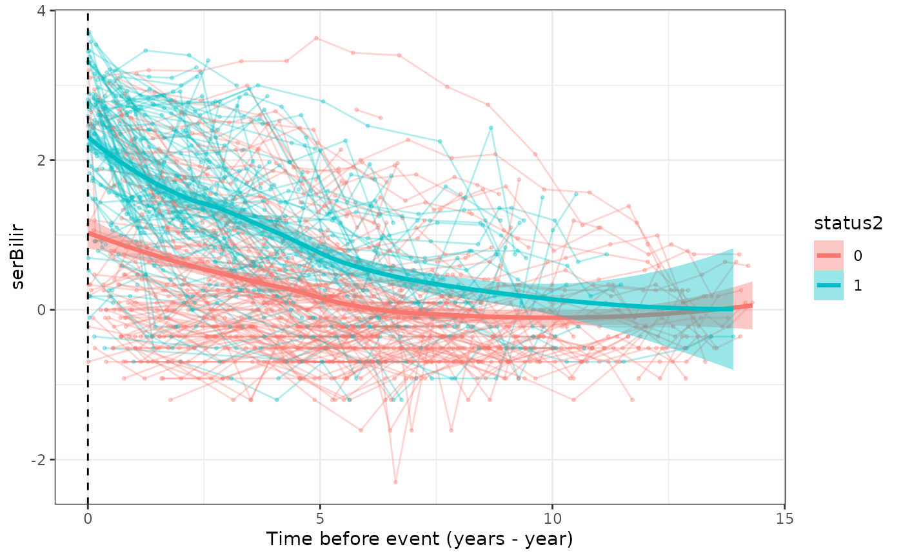

Plot individual longitudinal trajectories (spaghetti plot)
Source:R/spaghettiPlot.R
spaghettiPlot.RdDraws one line per subject for a longitudinal biomarker, optionally
colored by the subject's eventual outcome, with a smoothed mean
trajectory per outcome group overlaid. With align = "event" the
horizontal axis becomes the time remaining until the subject's
event/censoring time (survival_variable - time_variable, so 0 is
the event time, at the left edge). This mirrors the backward joint
model's view of the biomarker as a function of time-to-event. Unlike
cmtPlot, which averages over subjects sharing one event
time, this shows every subject's raw history.
Usage
spaghettiPlot(
data_plot_all,
bio_variable,
time_variable,
id_variable = "id",
survival_variable = NULL,
event_type_variable = NULL,
align = c("baseline", "event"),
n_subjects = NULL,
smooth = TRUE,
alpha = 0.3
)Arguments
- data_plot_all
A long-format
data.framewith one row per biomarker measurement.- bio_variable
Name of the biomarker variable to plot.
- time_variable
Name of the measurement-time variable.
- id_variable
Name of the subject ID column. Default is
"id".- survival_variable
Name of the time-to-event variable. Required when
align = "event"; otherwise ignored.- event_type_variable
Name of the variable used to color subjects (e.g. the event indicator or event type). Must be constant within each subject.
NULL(default) draws every subject in one color.- align
Either
"baseline"(default), plotting againsttime_variable, or"event", plotting against the time until the event,survival_variable - time_variable.- n_subjects
Optional number of subjects to draw, sampled at random (call
set.seed()first for a reproducible sample).NULL(default) draws every subject. The smoothed means use the drawn subjects only.- smooth
Logical; overlay a LOESS mean trajectory per group. Default
TRUE.- alpha
Transparency of the individual lines. Default
0.3.
Examples
data(pbc3)
# trajectories colored by death (1) vs alive/transplanted (0)
spaghettiPlot(pbc3, bio_variable = "serBilir", time_variable = "year",
event_type_variable = "status2")

# aligned at each subject's event/censoring time
spaghettiPlot(pbc3, bio_variable = "serBilir", time_variable = "year",
survival_variable = "years", event_type_variable = "status2",
align = "event")
